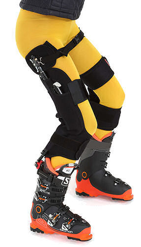

De dynamische skibrace bij knieartrose, meniscusklachten of verminderde kracht in de benen.

Wat is Ski-Mojo?
Wat is Ski-Mojo precies?
Ski-Mojo is een skihulpmiddel (een exoskelet) dat is ontworpen om de belasting op de knieën te verminderen tijdens het skiën. Het is m.a.w. een dynamische skibrace en bestaat uit een riem die om de taille van de skiër wordt gedragen en twee verbindingsstangen die aan de benen en de skischoenen zijn bevestigd.
Het idee achter de Ski-Mojo is dat het veersysteem gebruikt om het gewicht van de skiër te ondersteunen en te verdelen, waardoor de belasting op de knieën wordt verminderd.
Het veersysteem van de Ski-Mojo werkt als volgt: er zijn twee verbindingsstangen die aan de skischoenen zijn bevestigd en aan de draagriem zijn gekoppeld. De verbindingsstangen zijn voorzien van veren die zijn gekalibreerd op basis van het gewicht en de lengte van de skiër.
Wanneer de skiër begint te skiën en het gewicht naar voren verplaatst, zal de Ski-mojo de veerspanning gebruiken om het gewicht te ondersteunen en te verdelen, waardoor de belasting op de knieën dus wordt verminderd.
De Ski-mojo kan vooral nuttig zijn voor skiërs die last hebben van knieproblemen (artrose, versleten meniscus) of voor mensen die hun knieën niet maximaal kunnen belasten tijdens het skiën.
Ook kan het helpen om vermoeidheid te verminderen en de prestaties op de piste te verbeteren door de belasting op de benen te verminderen.
Kortom, het gebruik van Ski-Mojo kan helpen bij het verminderen van vermoeidheid, het beschermen van de knieën, het verbeteren van de prestaties en is geschikt voor alle niveaus van skiërs
De voordelen van Ski-Mojo:
Vermindering vermoeidheid
Ski-Mojo zorgt ervoor dat een deel van het gewicht van de skiër wordt overgebracht naar de Ski-Mojo, wat betekent dat de skier minder belasting op de benen ervaart en dus minder snel vermoeid raakt.
Bescherming van de knieën
Ski-Mojo heeft een veersysteem dat helpt bij het absorberen van schokken en trillingen tijdens het skiën. Dit helpt bij het verminderen van de belasting op de knieën en kan helpen bij het voorkomen van knieblessures.
Verdbeterde prestaties
Door het verminderen van vermoeidheid en het beschermen van de knieën kan Ski-Mojo helpen bij het verbeteren van de prestaties van een skier. De skier kan langer skiën en beter skiën zonder last te krijgen van vermoeidheid.
Geschikt voor alle niveaus
Ski-Mojo is geschikt voor alle niveaus van skiers, van beginners tot experts. Het kan helpen bij het opbouwen van vertrouwen en het verbeteren van de techniek van de skier.
Wat klanten zeggen
★★★★★ 5/5
"Ik heb sinds het scheuren van mijn kruisbanden en de meniscus in mijn knie, pijn bij hoge belasting vooral bij het skiën. De Ski-Mojo heeft mij het plezier weer terug gegeven. Heel blij mee!!"
Eric
★★★★★ 5/5
"Ik heb de Ski-Mojo aan laten meten na advies van de bootfitter in Amsterdam. Wat een verschil! Ondanks mijn heupartrose kan ik weer lekker skiën met mijn gezin."
Jan-Willem
★★★★★ 5/5
"Bij mij werd MS geconstateerd en door het verlies van spierkracht leek skiën verleden tijd. Door de Ski-Mojo is dat gelukking niet zo..."
Nora